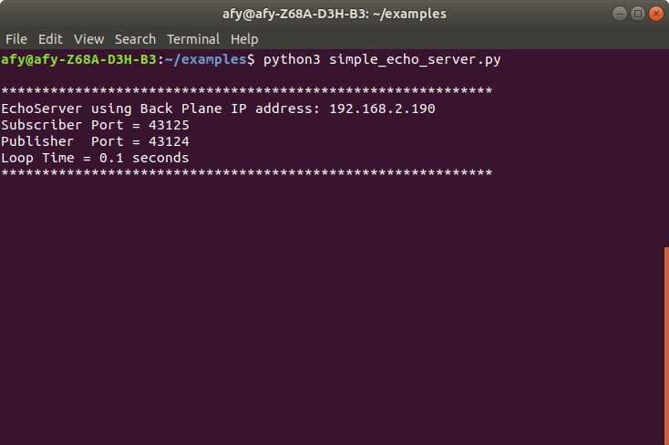
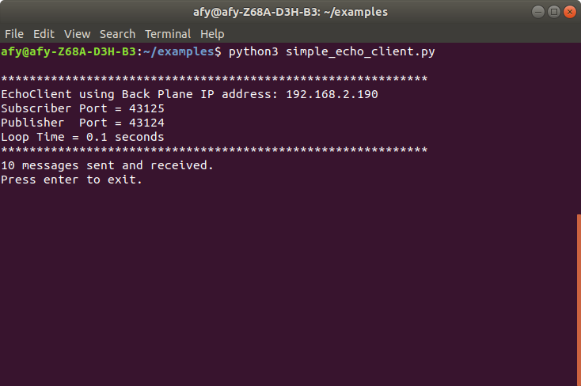
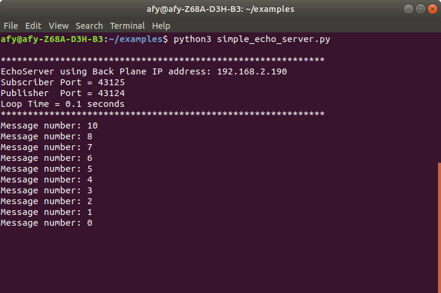

An Echo Server-Client Example
In this section we will build a simple echo server-client application using the Python Banyan Framework.
First, we will run the demo and then examine the code for both the server and client Banyan components.
Running The Example
The Backplane is installed as an executable module when Python Banyan is installed. By typing 'backplane' in a command or terminal window, the Backplane will start.
The components, simple_echo_server.py and simple_echo_client.py are invoked from the command line using the typical method to start a Python program.
The following screen shots were taken on a Linux computer running Python 3 and that is why the python3 command is displayed. You may run these examples on Linux, Windows, Mac or Raspberry using either Python 2 or Python 3. Simply substitute your system's specific python command to run the examples.
First start the Backplane in a terminal window.
backplane

Start the server in a second terminal window.
Go to the directory that contains simple_echo_server.py and type:
python3 simple_echo_server.py

The base class prints an informational header to the console.
Start the client in a third terminal window.
Go to the directory that contains simple_echo_client.py and type:
python3 simple_echo_client.py
A standard Banyan header is printed to the console for the client and the client begins sending its messages.
When the client completes sending all of its messages, the console for the client will indicate the number of messages sent and received.

The console for the server will display all of the message numbers it received

The Server
The role of the server is to simply wait for "echo" topic messages to arrive and then to extract the message's payload and publish a "reply" topic message.
Examining The Code
Let's look at the code below:
Lines 20 through 22 import the component's required modules.
Line 22 illustrates the standard syntax used to import the BanyanBase base class.
Line 25 declares the EchoServer component class. It inherits from the BanyanBase base class.
1 """
2 simple_echo_server.py
3
4 Copyright (c) 2016-2019 Alan Yorinks All right reserved.
5
6 Python Banyan is free software; you can redistribute it and/or
7 modify it under the terms of the GNU AFFERO GENERAL PUBLIC LICENSE
8 Version 3 as published by the Free Software Foundation; either
9 or (at your option) any later version.
10 This library is distributed in the hope that it will be useful,
11 but WITHOUT ANY WARRANTY; without even the implied warranty of
12 MERCHANTABILITY or FITNESS FOR A PARTICULAR PURPOSE. See the GNU
13 General Public License for more details.
14
15 You should have received a copy of the GNU AFFERO GENERAL PUBLIC LICENSE
16 along with this library; if not, write to the Free Software
17 Foundation, Inc., 51 Franklin St, Fifth Floor, Boston, MA 02110-1301 USA
18
19 """
20 import sys
21
22 from python_banyan.banyan_base import BanyanBase
23
24
25 class EchoServer(BanyanBase):
26 """
27 This class is a simple Banyan echo server
28
29 """
Lines 31 through 44 define the __init__ method. To keep things simple, this method does not accept any parameters.
When inheriting from another class, the parent class must be initialized.
Line 34 initializes the parent and sets the parent's process_name parameter. The process_name is printed to the console when the component is first invoked. All other default values are accepted as is.
Line 37 calls the BanyanBase method set_subscriber_topic to subscribe to 'echo' messages.
Line 41 calls the BanyanBase method receive_loop to wait for incoming messages.
Line 42 through 44 trap a Control-C entered by the user. The inherited BanyanBase clean_up method is called to close the ZeroMQ connections. The program is then exited.
31 def __init__(self, ):
32
33 # initialize the parent
34 super(EchoServer, self).__init__(process_name='EchoServer')
35
36 # subscribe to receive 'echo' messages from the client
37 self.set_subscriber_topic('echo')
38
39 # wait for messages to arrive
40 try:
41 self.receive_loop()
42 except KeyboardInterrupt:
43 self.clean_up()
44 sys.exit(0)
Lines 46 through 55 override the base class incoming_message_process method. Whenever a message is received by the receive_loop, it calls incoming_message_processing to process the message.
The incoming_message_processing method requires two parameters, a topic string, and a payload. Both the topic and payload are decoded within the receive_loop, so they are ready for use by the incoming_message_processing method.
Line 53 republishes the payload just received, setting the topic to 'reply'. The message number of the received message is then printed to the console.
46 def incoming_message_processing(self, topic, payload):
47 """
48 Process incoming messages from the client
49 :param topic: message topic
50 :param payload: message payload
51 :return:
52 """
53 self.publish_payload(payload, 'reply')
54 print('Message number:', payload['message_number'])
55
Instantiation Function
Lines 61 through 62 create a function to instantiate the EchoServer class. This function is added so that we can install our component as an executable file in our system if we desire to do so. Installing Components as executable modules is explained in a later section.
Lines 57 through 62 use a standard Python construct to call the instantiation function.
57 def echo_server():
58 EchoServer()
59
60
61 if __name__ == '__main__':
62 echo_server()
The Client
The role of the client is to publish 'echo' messages and to maintain a message sequencing number that is incorporated into the payload. Shortly after being invoked, the client sends out the first 'echo' message. It then waits for a 'reply' message from the server before publishing the next message.
The messaging sequencing number is decremented after each message is published. When the sequencing number reaches zero, the final message is published and the client halts.
Examining The Code
The code for the client is very similar to that of the server. In this section the major differences between the client and server are highlighted.
Line 38 calls the inherited BanyanBase method set_subscriber_topic to subscribe to 'reply' messages.
Line 41 establishes instance variables to keep track of the current message sequencing number in addition to the total messages sent. Both are initialized to a value of 10.
Line 44 publishes an "echo" message with a payload containing the current message number.
Line 48 calls the component's receive_loop, and the client waits for the next incoming 'reply' message.
1 """
2 simple_echo_client.py
3
4 Copyright (c) 2016-2019 Alan Yorinks All right reserved.
5
6 Python Banyan is free software; you can redistribute it and/or
7 modify it under the terms of the GNU AFFERO GENERAL PUBLIC LICENSE
8 Version 3 as published by the Free Software Foundation; either
9 or (at your option) any later version.
10 This library is distributed in the hope that it will be useful,
11 but WITHOUT ANY WARRANTY; without even the implied warranty of
12 MERCHANTABILITY or FITNESS FOR A PARTICULAR PURPOSE. See the GNU
13 General Public License for more details.
14
15 You should have received a copy of the GNU AFFERO GENERAL PUBLIC LICENSE
16 along with this library; if not, write to the Free Software
17 Foundation, Inc., 51 Franklin St, Fifth Floor, Boston, MA 02110-1301 USA
18
19 """
20
21 import sys
22
23 from python_banyan.banyan_base import BanyanBase
24
25
26 class EchoClient(BanyanBase):
27 """
28 This is a simple echo client derived from the BanyanBase class. It sends out a series of messages and expects an
29 echo reply from the server.
30 """
31
32 def __init__(self):
33
34 # initialize the parent
35 super(EchoClient, self).__init__(process_name='EchoClient')
36
37 # accept banyan messages with the topic of reply
38 self.set_subscriber_topic('reply')
39
40 # sequence number of messages and total number of messages to send
41 self.message_number = self.number_of_messages = 10
42
43 # send the first message - make sure that the server is already started
44 self.publish_payload({'message_number': self.message_number}, 'echo')
45
46 # get the reply messages
47 try:
48 self.receive_loop()
49 except KeyboardInterrupt:
50 self.clean_up()
51 sys.exit(0)
Line 53 is the incoming_message_processing method.
Line 62 tests the sequencing value of the 'reply' message. If 0, indicating the final message was sent and received, lines 63 through 66 print the total number of messages sent and received to the console, and the user is asked to press enter to exit the program.
Lines 69 through 71 process non-terminating 'reply'messages. The message number is decremented by 1 and the next 'echo' message is then built and published.
53 def incoming_message_processing(self, topic, payload):
54 """
55 Process incoming messages received from the echo client
56 :param topic: Message Topic string
57 :param payload: Message Data
58 :return:
59 """
60
61 # When a message is received and its number is zero, finish up.
62 if payload['message_number'] == 0:
63 print(str(self.number_of_messages) + ' messages sent and received. ')
64 input('Press enter to exit.')
65 self.clean_up()
66 sys.exit(0)
67 # bump the message number and send the message out
68 else:
69 self.message_number -= 1
70 if self.message_number >= 0:
71 self.publish_payload({'message_number': self.message_number}, 'echo')
72
73
74 def echo_client():
75 EchoClient()
76
77
78 if __name__ == '__main__':
79 echo_client()